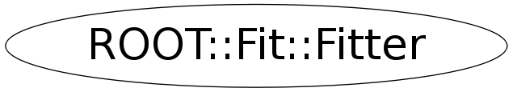

class ROOT::Fit::Fitter
Fitter class, entry point for performing all type of fits. Fits are performed using the generic ROOT::Fit::Fitter::Fit method. The inputs are the data points and a model function (using a ROOT::Math::IParamFunction) The result of the fit is returned and kept internally in the ROOT::Fit::FitResult class. The configuration of the fit (parameters, options, etc...) are specified in the ROOT::Math::FitConfig class. After fitting the config of the fit will be modified to have the new values the resulting parameter of the fit with step sizes equal to the errors. FitConfig can be preserved with initial parameters by calling FitConfig.SetUpdateAfterFit(false); @ingroup FitMain
Function Members (Methods)
public:
| ~Fitter() | |
| bool | ApplyWeightCorrection(const ROOT::Math::IMultiGenFunction& loglw2, bool minimizeW2L = false) |
| bool | CalculateHessErrors() |
| bool | CalculateMinosErrors() |
| const ROOT::Fit::FitConfig& | Config() const |
| ROOT::Fit::FitConfig& | Config() |
| bool | EvalFCN() |
| bool | Fit(const ROOT::Fit::BinData& data) |
| bool | Fit(const ROOT::Fit::UnBinData& data, bool extended = false) |
| bool | Fit(const ROOT::Fit::BinData& data, const ROOT::Math::IParametricFunctionMultiDim& func) |
| bool | Fit(const ROOT::Fit::UnBinData& data, const ROOT::Math::IParametricFunctionMultiDim& func) |
| bool | Fit(const ROOT::Fit::BinData& data, const ROOT::Math::IParametricGradFunctionMultiDim& func) |
| bool | Fit(const ROOT::Fit::UnBinData& data, const ROOT::Math::IParametricGradFunctionMultiDim& func) |
| bool | FitFCN() |
| bool | FitFCN(const ROOT::Math::FitMethodFunction& fcn, const double* params = 0) |
| bool | FitFCN(const ROOT::Math::FitMethodGradFunction& fcn, const double* params = 0) |
| bool | FitFCN(const ROOT::Math::IMultiGenFunction& fcn, const double* params = 0, unsigned int dataSize = 0, bool chi2fit = false) |
| bool | FitFCN(const ROOT::Math::IMultiGradFunction& fcn, const double* params = 0, unsigned int dataSize = 0, bool chi2fit = false) |
| bool | FitFCN(ROOT::Fit::Fitter::MinuitFCN_t fcn, int npar = 0, const double* params = 0, unsigned int dataSize = 0, bool chi2fit = false) |
| ROOT::Fit::Fitter | Fitter() |
| ROOT::Math::IMultiGenFunction* | GetFCN() const |
| ROOT::Math::Minimizer* | GetMinimizer() const |
| bool | IsBinFit() const |
| bool | LeastSquareFit(const ROOT::Fit::BinData& data) |
| bool | LikelihoodFit(const ROOT::Fit::BinData& data) |
| bool | LikelihoodFit(const ROOT::Fit::UnBinData& data) |
| bool | LikelihoodFit(const ROOT::Fit::BinData& data, bool extended) |
| bool | LikelihoodFit(const ROOT::Fit::UnBinData& data, bool extended) |
| bool | LikelihoodFit(const ROOT::Fit::BinData& data, const ROOT::Math::IParametricFunctionMultiDim& func, bool extended) |
| bool | LikelihoodFit(const ROOT::Fit::UnBinData& data, const ROOT::Math::IParametricFunctionMultiDim& func, bool extended) |
| bool | LikelihoodFit(const ROOT::Fit::BinData& data, const ROOT::Math::IParametricGradFunctionMultiDim& func, bool extended) |
| bool | LikelihoodFit(const ROOT::Fit::UnBinData& data, const ROOT::Math::IParametricGradFunctionMultiDim& func, bool extended) |
| bool | LinearFit(const ROOT::Fit::BinData& data) |
| const ROOT::Fit::FitResult& | Result() const |
| bool | SetFCN(const ROOT::Math::FitMethodFunction& fcn, const double* params = 0) |
| bool | SetFCN(const ROOT::Math::FitMethodGradFunction& fcn, const double* params = 0) |
| bool | SetFCN(const ROOT::Math::IMultiGenFunction& fcn, const double* params = 0, unsigned int dataSize = 0, bool chi2fit = false) |
| bool | SetFCN(const ROOT::Math::IMultiGradFunction& fcn, const double* params = 0, unsigned int dataSize = 0, bool chi2fit = false) |
| bool | SetFCN(ROOT::Fit::Fitter::MinuitFCN_t fcn, int npar = 0, const double* params = 0, unsigned int dataSize = 0, bool chi2fit = false) |
| void | SetFunction(const ROOT::Fit::Fitter::IModelFunction& func, bool useGradient = false) |
| void | SetFunction(const ROOT::Fit::Fitter::IModel1DFunction& func, bool useGradient = false) |
| void | SetFunction(const ROOT::Fit::Fitter::IGradModelFunction& func, bool useGradient = true) |
| void | SetFunction(const ROOT::Fit::Fitter::IGradModel1DFunction& func, bool useGradient = true) |
protected:
| bool | DoInitMinimizer() |
| bool | DoLeastSquareFit(const ROOT::Fit::BinData& data) |
| bool | DoLikelihoodFit(const ROOT::Fit::BinData& data, bool extended = true) |
| bool | DoLikelihoodFit(const ROOT::Fit::UnBinData& data, bool extended = false) |
| bool | DoLinearFit(const ROOT::Fit::BinData& data) |
| bool | DoMinimization(const ROOT::Math::IMultiGenFunction* chifunc = 0) |
| bool | DoMinimization(const ROOT::Fit::Fitter::BaseFunc& f, const ROOT::Math::IMultiGenFunction* chifunc = 0) |
| void | DoSetFunction(const ROOT::Fit::Fitter::IModel1DFunction& func, bool useGrad) |
| void | DoSetFunction(const ROOT::Fit::Fitter::IModelFunction& func, bool useGrad) |
| void | DoUpdateFitConfig() |
| int | GetNCallsFromFCN() |
Data Members
private:
| bool | fBinFit | flag to indicate if fit is binned |
| ROOT::Fit::FitConfig | fConfig | fitter configuration (options and parameter settings) |
| int | fDataSize | size of data sets (need for Fumili or LM fitters) |
| int | fFitType | type of fit (0 undefined, 1 least square, 2 likelihood) |
| ROOT::Fit::Fitter::IModelFunction* | fFunc | copy of the fitted function containing on output the fit result (managed by FitResult) |
| auto_ptr<ROOT::Math::Minimizer> | fMinimizer | ! pointer to used minimizer |
| auto_ptr<ROOT::Math::IMultiGenFunction> | fObjFunction | ! pointer to used objective function |
| auto_ptr<ROOT::Fit::FitResult> | fResult | ! pointer to the object containing the result of the fit |
| bool | fUseGradient | flag to indicate if using gradient or not |
Class Charts
{kind=link}
{kind=link}
{kind=link}
{kind=link}

Function documentation
bool FitFCN(ROOT::Fit::Fitter::MinuitFCN_t fcn, int npar = 0, const double* params = 0, unsigned int dataSize = 0, bool chi2fit = false)
bool SetFCN(ROOT::Fit::Fitter::MinuitFCN_t fcn, int npar = 0, const double* params = 0, unsigned int dataSize = 0, bool chi2fit = false)
bool Fit( const Data & data, const Function & func )
fit a data set using any generic model function
If data set is binned a least square fit is performed
If data set is unbinned a maximum likelihood fit (not extended) is done
Pre-requisite on the function:
it must implement the 1D or multidimensional parametric function interface
SetFunction(func)
bool Fit(const ROOT::Fit::BinData& data)
Fit a binned data set using a least square fit (default method)
return DoLeastSquareFit(const ROOT::Fit::BinData& data)
bool Fit(const ROOT::Fit::UnBinData& data, bool extended = false)
fit an unbinned data set using loglikelihood method
return DoLikelihoodFit(data, extended)
bool LikelihoodFit(const Data & data )
Likelihood fit (unbinned or unbinned) depending on the type of data
If Binned default is extended
If Unbinned defult is NOT extended (for backward compatibility)
return DoLikelihoodFit(data)
bool LikelihoodFit(const Data & data, bool extended )
Likelihood fit using extended or not extended method
bool LikelihoodFit( const Data & data, const Function & func, bool extended)
fit a data set using any generic model function
Pre-requisite on the function:
SetFunction(func)
bool FitFCN(ROOT::Fit::Fitter::MinuitFCN_t fcn, int npar = 0, const double* params = 0, unsigned int dataSize = 0, bool chi2fit = false)
bool SetFCN(ROOT::Fit::Fitter::MinuitFCN_t fcn, int npar = 0, const double* params = 0, unsigned int dataSize = 0, bool chi2fit = false)
bool FitFCN(const ROOT::Math::IMultiGenFunction& fcn, const double* params = 0, unsigned int dataSize = 0, bool chi2fit = false)
Fit using the given FCN function represented by a multi-dimensional function interface
(ROOT::Math::IMultiGenFunction).
Give optionally the initial arameter values, data size to have the fit Ndf correctly
set in the FitResult and flag specifying if it is a chi2 fit.
Note that if the parameters values are not given (params=0) the
current parameter settings are used. The parameter settings can be created before
by using the FitConfig::SetParamsSetting. If they have not been created they are created
automatically when the params pointer is not zero.
Note that passing a params != 0 will set the parameter settings to the new value AND also the
step sizes to some pre-defined value (stepsize = 0.3 * abs(parameter_value) )
bool SetFCN(const ROOT::Math::IMultiGenFunction& fcn, const double* params = 0, unsigned int dataSize = 0, bool chi2fit = false)
Fit using a FitMethodFunction interface. Same as method above, but now extra information
can be taken from the function class
Set the FCN function represented by a multi-dimensional function interface
(ROOT::Math::IMultiGenFunction) and optionally the initial parameters
See also note above for the initial parameters for FitFCN
bool SetFCN(const ROOT::Math::FitMethodFunction& fcn, const double* params = 0)
Set the objective function (FCN) using a FitMethodFunction interface.
Same as method above, but now extra information can be taken from the function class
bool FitFCN(const ROOT::Math::IMultiGradFunction& fcn, const double* params = 0, unsigned int dataSize = 0, bool chi2fit = false)
Fit using the given FCN function representing a multi-dimensional gradient function
interface (ROOT::Math::IMultiGradFunction). In this case the minimizer will use the
gradient information provided by the function.
For the options same consideration as in the previous method
bool FitFCN(const ROOT::Math::FitMethodGradFunction& fcn, const double* params = 0)
Fit using a FitMethodGradFunction interface. Same as method above, but now extra information
can be taken from the function class
bool SetFCN(const ROOT::Math::IMultiGradFunction& fcn, const double* params = 0, unsigned int dataSize = 0, bool chi2fit = false)
Set the FCN function represented by a multi-dimensional gradient function interface
(ROOT::Math::IMultiGenFunction) and optionally the initial parameters
See also note above for the initial parameters for FitFCN
bool FitFCN(ROOT::Fit::Fitter::MinuitFCN_t fcn, int npar = 0, const double* params = 0, unsigned int dataSize = 0, bool chi2fit = false)
bool EvalFCN()
Perform a simple FCN evaluation. FitResult will be modified and contain the value of the FCN
bool LinearFit(const ROOT::Fit::BinData& data)
do a linear fit on a set of bin-data
{ return DoLinearFit(data); }void SetFunction(const IModelFunction & func, bool useGradient = false)
Set the fitted function (model function) from a parametric function interface
void SetFunction(const IModel1DFunction & func, bool useGradient = false)
Set the fitted function from a parametric 1D function interface
bool CalculateHessErrors()
perform an error analysis on the result using the Hessian
Errors are obtaied from the inverse of the Hessian matrix
To be called only after fitting and when a minimizer supporting the Hessian calculations is used
otherwise an error (false) is returned.
A new FitResult with the Hessian result will be produced
bool CalculateMinosErrors()
perform an error analysis on the result using MINOS
To be called only after fitting and when a minimizer supporting MINOS is used
otherwise an error (false) is returned.
The result will be appended in the fit result class
Optionally a vector of parameter indeces can be passed for selecting
the parameters to analyse using FitConfig::SetMinosErrors
bool IsBinFit() const
query if fit is binned. In cse of false teh fit can be unbinned
or is not defined (like in case of fitting through a ::FitFCN)
{ return fBinFit; }ROOT::Math::Minimizer * GetMinimizer() const
return pointer to last used minimizer
(is NULL in case fit is not yet done)
This pointer will be valid as far as the data, the objective function
and the fitter class have not been deleted.
To be used only after fitting.
The pointer should not be stored and will be invalided after performing a new fitting.
In this case a new instance of ROOT::Math::Minimizer will be re-created and can be
obtained calling again GetMinimizer()
{ return fMinimizer.get(); }ROOT::Math::IMultiGenFunction * GetFCN() const
return pointer to last used objective function
(is NULL in case fit is not yet done)
This pointer will be valid as far as the data and the fitter class
have not been deleted. To be used after the fitting.
The pointer should not be stored and will be invalided after performing a new fitting.
In this case a new instance of the function pointer will be re-created and can be
obtained calling again GetFCN()
{ return fObjFunction.get(); }bool ApplyWeightCorrection(const ROOT::Math::IMultiGenFunction& loglw2, bool minimizeW2L = false)
apply correction in the error matrix for the weights for likelihood fits
This method can be called only after a fit. The
passed function (loglw2) is a log-likelihood function impelemented using the
sum of weight squared
When using FitConfig.SetWeightCorrection() this correction is applied
automatically when doing a likelihood fit (binned or unbinned)
bool DoMinimization(const ROOT::Fit::Fitter::BaseFunc& f, const ROOT::Math::IMultiGenFunction* chifunc = 0)
do minimization
bool DoMinimization(const ROOT::Math::IMultiGenFunction* chifunc = 0)
do minimization after having set obj function